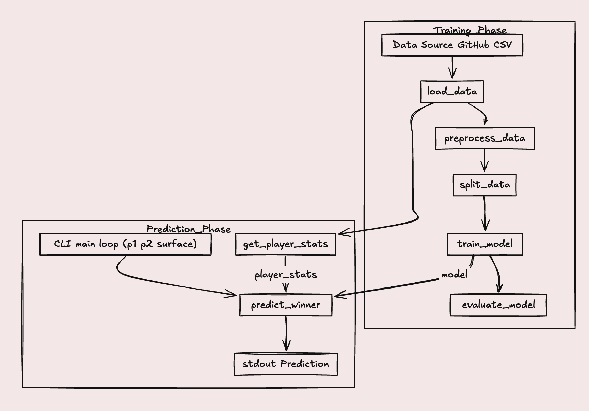

ATP Tennis Match Predictor
Overview
Developed a machine learning system that predicts the outcomes of professional tennis matches on the ATP tour. The project demonstrates expertise in data science, feature engineering, and machine learning pipelines, achieving a 64% prediction accuracy through careful feature selection and model optimization.
Key Features
- Comprehensive Data Processing: Transformed 6,000+ historical ATP matches into a player-centric dataset optimized for machine learning, handling missing values and ensuring data quality
- Advanced Feature Engineering: Created sophisticated features including Elo rating updates (a chess-inspired rating system adapted for tennis), rank differences, age differences, point differences, surface type indicators, and tournament seasonality metrics
- Elo Rating System: Implemented a dynamic player rating system that updates after each match, providing a more accurate measure of current player strength than static ATP rankings
- Symmetric Feature Design: Ensured model predictions are consistent regardless of player order by creating symmetric features (e.g., rank difference rather than individual ranks)
- ML Pipeline: Built an end-to-end pipeline with preprocessing (missing value imputation, feature scaling, one-hot encoding), model training, hyperparameter tuning, and evaluation
- Ensemble Methods: Trained and compared multiple models including decision trees and gradient boosting classifiers to find the optimal predictor
Technical Implementation
Data Transformation
The raw match data contained information about individual matches with winner and loser columns. I transformed this into a player-centric format where each row represents one player in a match, with features describing both players and their relative strengths. This transformation doubled the dataset size and enabled symmetric feature engineering.
Feature Engineering
The Elo rating system was crucial to the model's performance. I implemented a version adapted for tennis that considers margin of victory and adjusts ratings more aggressively for unexpected outcomes. Additional features captured various aspects of match context:
- Rank and point differences between players
- Age difference (experience vs. youth)
- Surface type (clay, grass, hard court) with one-hot encoding
- Tournament tier and importance
- Seasonality (time of year affects player form)
- Recent performance metrics and head-to-head records
Model Development
I started with a baseline model using only ATP rankings, which achieved 58% accuracy. After adding engineered features and training gradient boosting classifiers, accuracy improved to 64%. The gradient boosting model outperformed decision trees by better capturing non-linear relationships and feature interactions.
Pipeline Architecture
The scikit-learn pipeline handles all preprocessing automatically: missing value imputation fills gaps in historical data, StandardScaler normalizes continuous features, and OneHotEncoder converts categorical variables. This ensures consistent preprocessing between training and prediction, preventing data leakage and making the model production-ready.
Challenges & Solutions
One major challenge was handling missing data, particularly for older matches where detailed statistics weren't recorded. I implemented a sophisticated imputation strategy that uses median values for numerical features and mode for categorical features, while also creating indicator variables to flag imputed values.
Another challenge was preventing overfitting while maintaining good performance. I addressed this through cross validation, careful feature selection, and hyperparameter tuning. The gradient boosting model uses limited tree depth and learning rate to prevent memorizing training examples.
Results & Analysis
The final model achieves 64% prediction accuracy, a significant improvement over the 58% baseline and exceeding the 50% random guess threshold by a substantial margin. Feature importance analysis revealed that Elo ratings, rank differences, and surface type were the most predictive features. The model performs better on matches between players with larger skill gaps and struggles with close matchups, which aligns with intuition about tennis match dynamics.
Future Improvements
Potential enhancements include incorporating player injury history, recent match fatigue, head-to-head records, and momentum indicators. Adding neural networks or more sophisticated ensemble methods could also improve performance.